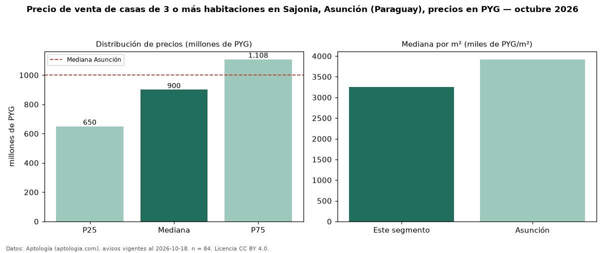

Precio de venta de casas de 3 o más habitaciones en Sajonia, Asunción (Paraguay), precios en PYG — octubre 2026
En Sajonia, Asunción (Paraguay), la mediana de precio de venta de casas de 3 o más habitaciones es PYG 900 millones, según 84 avisos vigentes. Frente a la mediana de Asunción para casas de 3 o más habitaciones (PYG 1,00 mil millones), queda 10 % por debajo. Por metro cuadrado, la mediana es PYG 3,26 millones/m² (n = 70 avisos con área), 17 % por debajo de Asunción (PYG 3,92 millones/m²). Son 64 % de los 132 avisos de casas en venta de la zona, cuya mediana general es PYG 750 millones (+20 %). El área mediana anunciada es 277 m². La mitad central de los avisos va de PYG 650 millones a PYG 1,11 mil millones (razón 1,7), una dispersión moderada. Datos: Aptología (aptologia.com), CC BY 4.0 — https://www.aptologia.com/py/venta/asuncion. Archivos: PDF, CSV con las cifras y gráfica PNG.

| Avisos únicos | 84 |
|---|---|
| Percentil 25 | COP 650.000.000 |
| Mediana | COP 900.000.000 |
| Percentil 75 | COP 1.107.500.000 |
| Mediana por m² | COP 3.256.578 |
Fuente: avisos vigentes de portales inmobiliarios recopilados por Aptología, deduplicados (mínimo 30 avisos únicos por celda). Precios pedidos, no cerrados. Fecha: 2026-10-18.